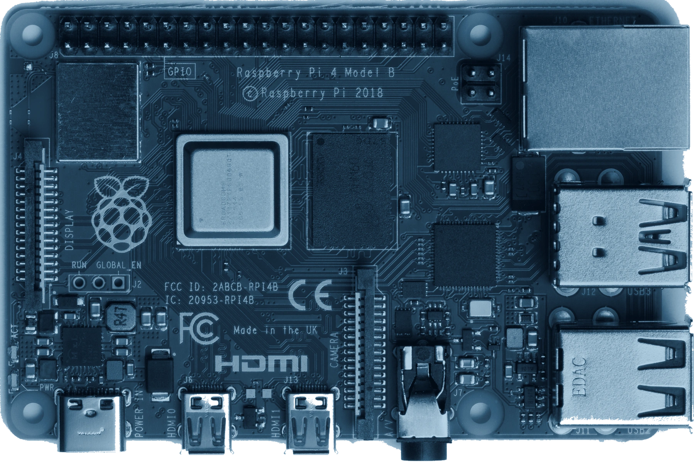

Software & Dynamics F&O
Small computer. Big curiosity.
Beyond software, I’m interested in Raspberry Pi homelabs.
Start with the hardware. Take a closer look.

A computer you can look inside.
Inspect the connectors to see how this small board connects to the physical world.
Board facts from Raspberry Pi